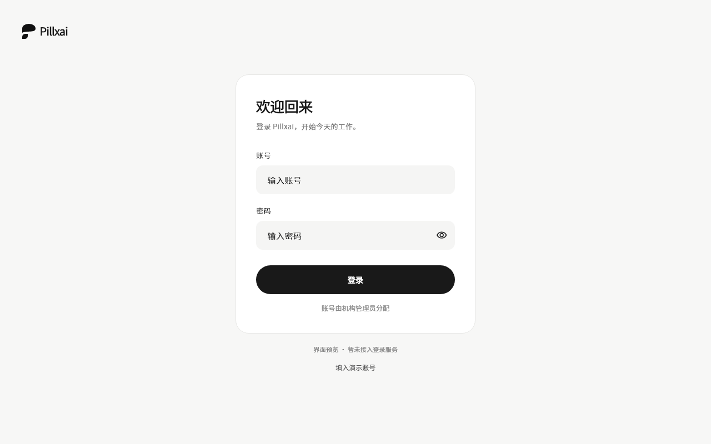
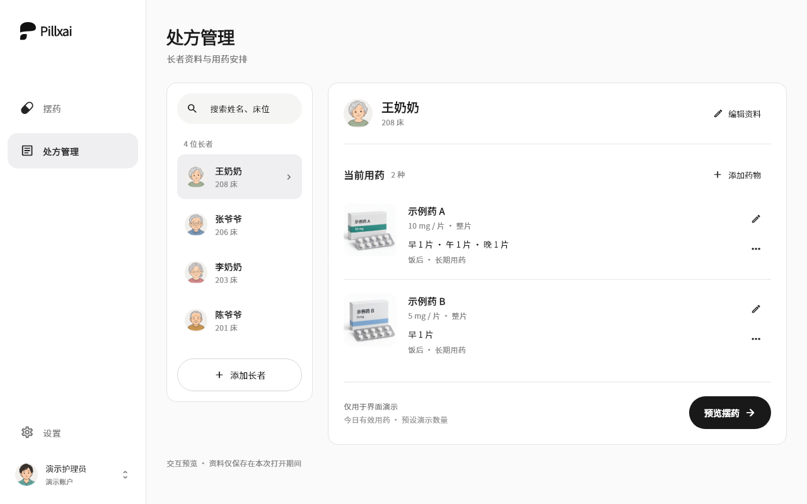
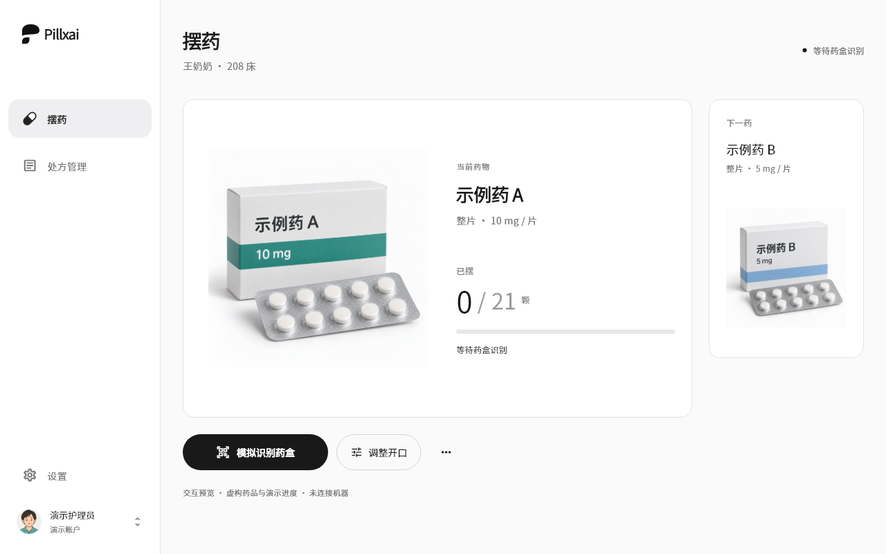
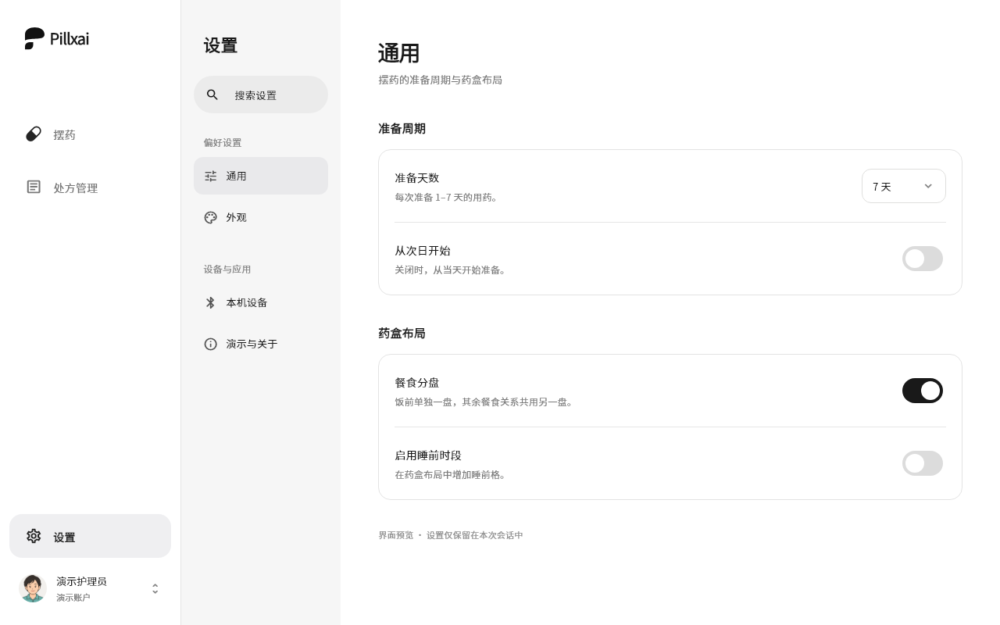
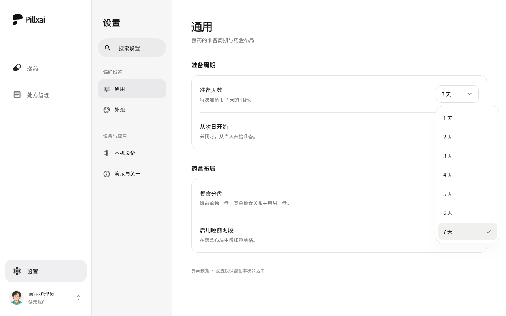
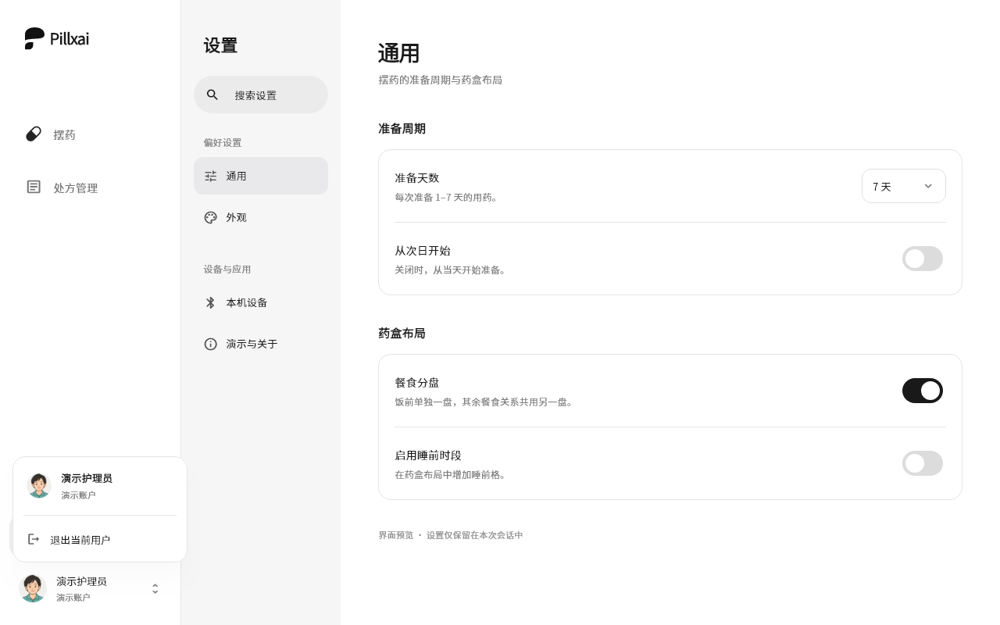
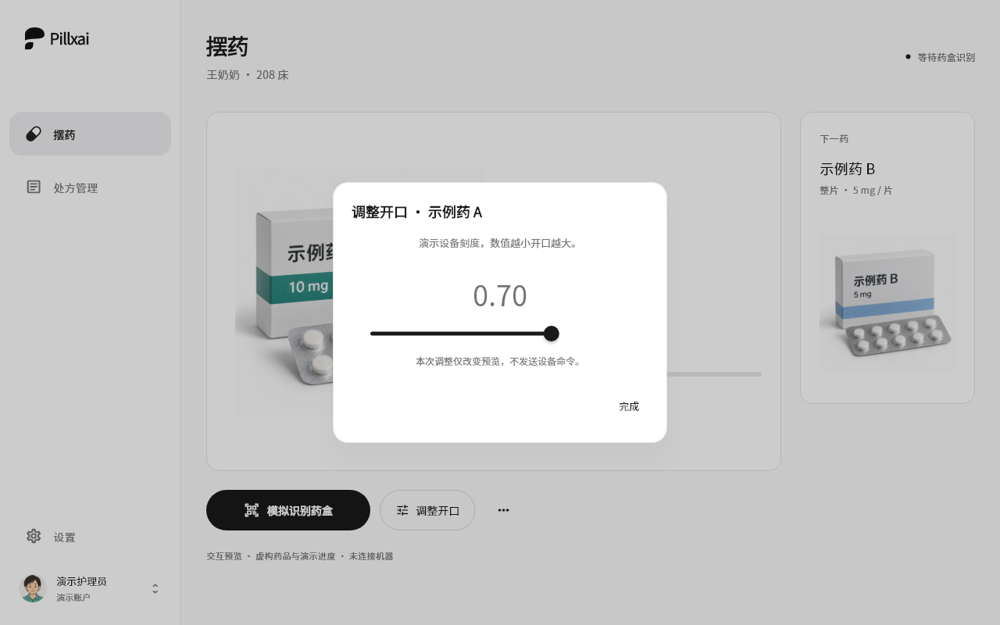

Pillxai
处方管理、摆药与设置 · 当前界面







截图由当前 Flutter 组件直接渲染为 1280 × 800，使用本地字体与实际素材；可通过 tool/capture_preview.dart 重现。
使用虚构资料和内存演示数据，刷新后恢复；真实设备、服务与持久化尚未接入。
处方管理、摆药与设置 · 当前界面







截图由当前 Flutter 组件直接渲染为 1280 × 800，使用本地字体与实际素材；可通过 tool/capture_preview.dart 重现。
使用虚构资料和内存演示数据，刷新后恢复；真实设备、服务与持久化尚未接入。